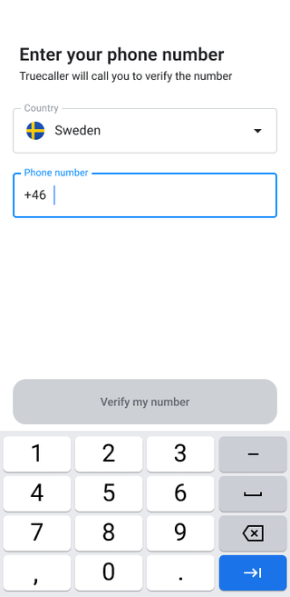
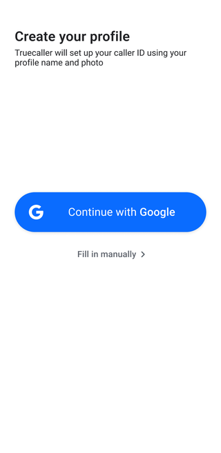

Fixing the leaking bucket: onboarding funnel optimization
Analyzing the funnel to cut drop-off and unnecessary steps, and lift registration rate worldwide.
Role: Product Manager, onboarding · Platform: Android & iOS · Partners: Data & Analytics, Design, Identity
The problem
Onboarding was a leaking bucket
To hit our user-growth target, the team faced an uncomfortable truth: the onboarding flow leaked. Even a small drop-off at the very start of the funnel compounded into significant user loss before registration completed. And the leaks weren't uniform: drop-off varied hugely from one market to the next, so a single global fix wouldn't do.
My mandate was not a one-off patch. It was to build a continuous improvement cycle for worldwide registration rate.


The core screens a new user moves through on the way to a registered account.
The approach
Find where users actually leak
I started where the data was, not where the opinions were. Working with our data analysts, I mapped the full registration funnel step by step and isolated the two screens driving the biggest drop-off, the places worth fixing first.
What I changed
Cut the friction, defer the non-essential
The fixes fell into a simple principle: get users to a working app as fast as possible, and move everything non-essential out of the way until after they're in.
Funnel analysis
Partnered with data analysts to map the funnel and pinpoint the two highest drop-off screens, so effort went where the leak was.
Iterative UX refinement
Simplified those screens to cut cognitive load, and added a verification confirmation prompt to catch accidental exits.
Permission postponement
Audited the permission-request screen and moved several prompts to after core registration instead of blocking it.
Returning-user fast-track
Added Google One Tap sign-in so returning users are recognized instantly, skipping phone-number entry and profile fetch to land in the app in one tap.
Shorter onboarding
Cleaned and deferred 4 non-mandatory steps to post-registration days, so users reach a working app sooner.
Localized registration
Tailored registration steps and verification methods for focus growth markets and regions, since drop-off varied so much by market.
Ongoing hygiene
Smaller wins along the way
Beyond the big levers, the cycle runs as a steady stream of small, measured fixes. A couple of examples:
- Moved the backup prompt from onboarding to day 3: D7 retention improved in pilot markets, so we rolled it out across the rest of the world, then tested India separately.
- Notified users whose verification got throttled so they could finish signing up: 24% more users (14 percentage points) completed verification in India.
The result
A steadily less leaky funnel
- +20% improvement in registration rate worldwide.
- 4 non-mandatory steps removed from the core flow and deferred to post-registration.
- The funnel moved into a stable maintenance mode, with a repeatable analysis-to-fix cycle the team keeps running instead of a one-off project.